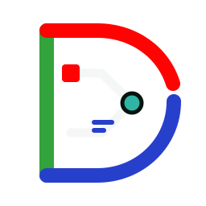

Start with the place
A scale-conscious map and model provide shared context. Precision is shown only when the underlying geometry supports it.
A Hermetic Labs civic infrastructure system

DATA DIRECT
Data Direct is being developed as one spatial, source-backed view for understanding a data-center project—what is proposed, who is responsible, what evidence supports it, and what still needs an answer.
A Hermetic Labs pilot—not an official government or data-center operator portal.

One viewport
Plans, questions, evidence, conditions, interviews, and outcomes should not live in disconnected portals. Data Direct is designed to keep them attached to the project and reveal detail progressively.
The public record, made navigable
The system is designed to help a person move from a concern to an inspectable answer without laundering uncertainty into fact.
Bring public records, project geometry, timelines, and responsible entities into one project context.
Turn source-backed concerns into clear questions while preserving how each question was produced.
Route a question, proposal, or commitment to the party with responsibility and authority.
Attach measurements, decisions, follow-ups, and outcomes—then update the record without erasing history.
QUESTION
→SOURCE
→AUTHORITY
→ACTION
→OWNER
→STATUS
→REMEDY
Data Direct GA
Georgia is the first pilot state. The initial projects deliberately begin at different stages so the product can prove that one architecture can represent distinct local realities without blending them together.
FAYETTE COUNTY · GEORGIA
A validation environment for the common project model, interview flow, visual vocabulary, and project-scoped information routes.
EFFINGHAM COUNTY · GEORGIA
A source-rich project instance contributing evidence, accountability, GIS, proposal, and site-understanding capabilities to the shared core.
Lessons may transfer. Project facts, permissions, and local authority do not.
Built to travel without losing the truth
Data Direct is designed to begin with two Georgia projects while keeping the underlying project contract ready for additional counties, states, and partners.
Data Direct by Hermetic Labs
The Georgia pilot is in development. For project, research, or public-sector collaboration, talk with Hermetic Labs.